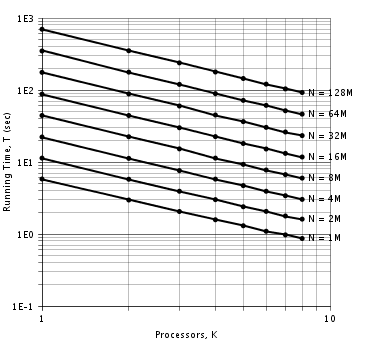
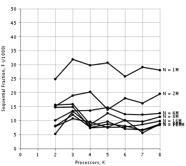
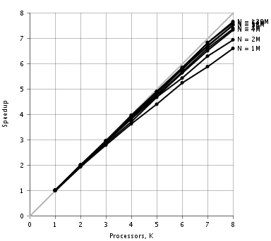
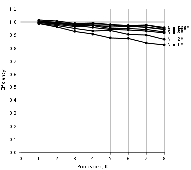

Speedup
Speedup
|
||||||||||
| PREV CLASS NEXT CLASS | FRAMES NO FRAMES | |||||||||
| SUMMARY: NESTED | FIELD | CONSTR | METHOD | DETAIL: FIELD | CONSTR | METHOD | |||||||||
java.lang.Object
public class Speedup
Class Speedup is a main program that analyzes running time measurements and reports speedup metrics for a parallel program.
Usage: java Speedup inputfile
The input file, a plain text file, is formatted as follows. Blank lines are ignored. A pound sign (#) and everything after it on a line is ignored.
The input file begins with running time data. Each line contains an n value, a K value, and one or more T values. The n value, an integer, is the size parameter; it is either the problem size itself or a quantity from which the problem size can be derived. The K value, an integer >= 0, is the number of parallel processors; K = 0 signifies the running times are for a sequential version of the program, K > 0 signifies the running times are for a parallel version of the program. Each T value, a long integer, is a running time measurement in milliseconds. For each n value, the running time data lines must appear in ascending order of the K values. For each n value, the value K = 1 is mandatory; other K values are optional.
After the running time data come the problem size specifications. Each line begins with the literal character n followed by an n value, an N value, and a label text enclosed in quotation marks. The n value, an integer, is one of the size parameter values appearing in the running time data section. The N value, a floating point number, is the actual problem size corresponding to that size parameter. The label text is placed next to the curve for that size parameter on the plots. If no problem size specification line appears for a certain size parameter in the running time data, then the problem size is taken to be the same as the size parameter, and the label text is taken to be "N = n".
After the problem size specifications (if any) come the plot specifications. Each of the following plot specifications is optional. The plot specification keywords are the same as the methods of class Plot; see that class for further information.
The following plot specifications control the running time plot:
time frameTitle "theTitle" (default: no title)
time plotTitle "theTitle" (default: "Running Time vs.
Processors")
time margins theMargin
time leftMargin theMargin (default: 42 points)
time topMargin theMargin (default: 18 points)
time rightMargin theMargin (default: 18 points)
time bottomMargin theMargin (default: 36 points)
time xAxisStart theStart (default: automatic*)
time xAxisEnd theEnd (default: automatic*)
time xAxisLength theLength (default: 288 points)
time xAxisTitle "theTitle" (default: "Processors, K")
time yAxisStart theStart (default: automatic*)
time yAxisEnd theEnd (default: automatic*)
time yAxisTickFormat "theFormat" (default: "0E0")
time yAxisLength theLength (default: 288 points)
time yAxisTitle "theTitle" (default: "Running Time, T (sec)")
time yAxisTitleOffset theTitleOffset (default: 30 points)
*For the running time plot, which is a log-log plot, the specified X and
Y axis starting and ending values are the base-10 logarithms of the actual
values.
The following plot specifications control the speedup plot:
time frameTitle "theTitle" (default: no title)
speedup plotTitle "theTitle" (default: "Speedup vs.
Processors")
speedup margins theMargin
speedup leftMargin theMargin (default: 42 points)
speedup topMargin theMargin (default: 18 points)
speedup rightMargin theMargin (default: 18 points)
speedup bottomMargin theMargin (default: 36 points)
speedup xAxisStart theStart (default: 0)
speedup xAxisEnd theEnd (default: automatic)
speedup xAxisMajorDivisions theMajorDivisions (default: 10)
speedup xAxisMinorDivisions theMinorDivisions (default: 1)
speedup xAxisLength theLength (default: 288 points)
speedup xAxisTitle "theTitle" (default: "Processors, K")
speedup yAxisStart theStart (default: 0)
speedup yAxisEnd theEnd (default: automatic)
speedup yAxisMajorDivisions theMajorDivisions (default: 10)
speedup yAxisMinorDivisions theMinorDivisions (default: 1)
speedup yAxisTickFormat "theFormat" (default: "0")
speedup yAxisLength theLength (default: 288 points)
speedup yAxisTitle "theTitle" (default: "Speedup")
speedup yAxisTitleOffset theTitleOffset (default: 30 points)
The following plot specifications control the efficiency plot:
time frameTitle "theTitle" (default: no title)
eff plotTitle "theTitle" (default: "Efficiency vs.
Processors")
eff margins theMargin
eff leftMargin theMargin (default: 42 points)
eff topMargin theMargin (default: 18 points)
eff rightMargin theMargin (default: 18 points)
eff bottomMargin theMargin (default: 36 points)
eff xAxisStart theStart (default: 0)
eff xAxisEnd theEnd (default: automatic)
eff xAxisMajorDivisions theMajorDivisions (default: 10)
eff xAxisMinorDivisions theMinorDivisions (default: 1)
eff xAxisLength theLength (default: 288 points)
eff xAxisTitle "theTitle" (default: "Processors, K")
eff yAxisStart theStart (default: 0)
eff yAxisEnd theEnd (default: automatic)
eff yAxisMajorDivisions theMajorDivisions (default: 10)
eff yAxisMinorDivisions theMinorDivisions (default: 1)
eff yAxisTickFormat "theFormat" (default: "0.0")
eff yAxisLength theLength (default: 288 points)
eff yAxisTitle "theTitle" (default: "Efficiency")
eff yAxisTitleOffset theTitleOffset (default: 30 points)
The following plot specifications control the experimentally determined
sequential fraction (EDSF) plot:
time frameTitle "theTitle" (default: no title)
edsf plotTitle "theTitle" (default: "EDSF vs.
Processors")
edsf margins theMargin
edsf leftMargin theMargin (default: 42 points)
edsf topMargin theMargin (default: 18 points)
edsf rightMargin theMargin (default: 18 points)
edsf bottomMargin theMargin (default: 36 points)
edsf xAxisStart theStart (default: 0)
edsf xAxisEnd theEnd (default: automatic)
edsf xAxisMajorDivisions theMajorDivisions (default: 10)
edsf xAxisMinorDivisions theMinorDivisions (default: 1)
edsf xAxisLength theLength (default: 288 points)
edsf xAxisTitle "theTitle" (default: "Processors, K")
edsf yAxisStart theStart (default: 0)
edsf yAxisEnd theEnd (default: automatic)
edsf yAxisMajorDivisions theMajorDivisions (default: 10)
edsf yAxisMinorDivisions theMinorDivisions (default: 1)
edsf yAxisTickFormat "theFormat" (default: "0")
edsf yAxisLength theLength (default: 288 points)
edsf yAxisTitle "theTitle" (default: "Sequential Fraction, F")
edsf yAxisTitleOffset theTitleOffset (default: 30 points)
For each line in the running time data section, the program takes the smallest T value as the running time for the given n and K values. For each value of n, the program calculates the following data series: running time versus K for K >= 1; speedup versus K for K >= 1 (speedup relative to the sequential version if input data for K = 0 is present, otherwise speedup relative to the parallel version for K = 1); efficiency versus K for K >= 1 (efficiency = speedup/K); EDSF versus K for K >= 2 (EDSF relative to the parallel version for K = 1); and running time deviation versus K (deviation = (maximum T - minimum T) / (minimum T)).
The program prints the running time, speedup, efficiency, EDSF, and running time deviation series on the standard output.
The program displays plots of the running time, speedup, efficiency, and EDSF series, each in its own window. Each plot window has menu options for saving the plot to a PNG image file, saving the plot to a PostScript file, and zooming the display.
Here is an example of an input file:
times.txt
20 0 5718 5773 5777 5822 5864 5886 5891
20 1 5798 5809 5817 5823 5849 5865 5897
20 2 2971 2986 2988 3003 3014 3017 3034
20 3 2056 2077 2092 2112 2114 2135 2165
20 4 1579 1591 1595 1603 1604 1605 1610
20 5 1302 1304 1307 1311 1314 1316 1319
20 6 1091 1099 1110 1112 1114 1135 1145
20 7 973 974 979 1007 1027 1027 1105
20 8 867 870 881 883 895 913 1019
21 0 11169 11176 11180 11298 11408 11416 11576
21 1 11334 11390 11415 11430 11432 11445 11458
21 2 5753 5758 5801 5802 5812 5838 5866
21 3 3921 3933 3981 3993 4002 4056 4086
21 4 3006 3011 3012 3016 3033 3052 3058
21 5 2393 2425 2426 2449 2452 2458 2490
21 6 2059 2064 2076 2080 2081 2442 2733
21 7 1776 1781 1783 1785 1799 1802 1825
21 8 1611 1616 1619 1625 1642 1643 1771
22 0 22138 22279 22282 22376 22416 22506 22670
22 1 22216 22290 22316 22549 22575 22637 22662
22 2 11220 11359 11361 11369 11385 11387 11426
22 3 7604 7631 7633 7771 7808 7905 7914
22 4 5780 5814 5817 5863 5886 5886 6807
22 5 4704 4704 4713 4725 4727 4753 4757
22 6 3930 3944 3953 3956 3967 3972 3984
22 7 3405 3426 3431 3444 3446 3455 3687
22 8 3023 3041 3042 3048 3068 3091 3123
23 0 43995 44306 44441 44543 44718 44847 45234
23 1 44170 44209 44331 44345 44364 44702 44767
23 2 22430 22444 22460 22558 22560 22942 22983
23 3 15190 15213 15396 15516 15683 15689 15910
23 4 11325 11552 11558 11560 11579 11595 11610
23 5 9281 9289 9289 9309 9361 9418 9423
23 6 7730 7773 7775 7830 7877 7955 7956
23 7 6675 6700 6705 6706 6715 6727 6737
23 8 5961 5972 5989 6003 6016 6094 6609
24 0 88101 88457 89067 89250 89323 89917 90187
24 1 87694 87924 88072 88353 88466 88540 88894
24 2 44196 44681 44857 44887 44939 45039 45166
24 3 29859 30159 30270 30484 30486 30775 30814
24 4 22551 22670 22724 22794 23156 23262 25503
24 5 18063 18331 18477 18592 18767 19364 19453
24 6 15179 15340 15445 15498 15678 16906 18453
24 7 13180 13249 13260 13314 13327 13406 13904
24 8 11716 11770 11805 11934 11951 12059 12991
25 0 175108 175302 175680 176496 177071 178365 181651
25 1 175452 175623 175670 175926 176410 176607 178560
25 2 88185 89112 89178 89241 89432 89777 89921
25 3 60031 60145 60161 61135 61647 61659 61727
25 4 44941 45368 45618 45751 45934 46339 53115
25 5 36443 36481 36586 36588 36671 36772 36775
25 6 30270 30461 30518 30688 30720 30993 31282
25 7 26076 26368 26405 26556 26616 26721 26770
25 8 23287 23288 23350 23441 23616 23827 23965
26 0 351583 357215 357360 357711 358596 362653 363086
26 1 348706 351180 351643 351936 351987 352264 352354
26 2 176925 179100 179388 179638 181486 182045 196086
26 3 119701 119715 120342 120793 121305 122482 122774
26 4 89095 89182 90051 90113 90240 92107 98899
26 5 71888 72280 72356 72611 73266 73785 74389
26 6 61077 61097 61108 61156 61382 61396 61620
26 7 51485 52184 52282 52733 52906 53168 53238
26 8 46279 46543 46683 46851 48792 49126 51304
27 0 705776 706487 713025 713236 713634 714578 716011
27 1 696826 700121 703033 705225 709731 712779 713126
27 2 351242 354433 354523 355175 355433 355831 357476
27 3 237912 238336 238485 238900 239785 241458 241914
27 4 178166 178444 178677 178688 181724 182888 183997
27 5 144231 145245 146223 146378 146829 147605 147956
27 6 120829 120894 121618 121637 121664 121835 122048
27 7 103471 103706 104441 104913 105210 106320 113690
27 8 92259 93030 93253 94102 94126 94317 103790
n 20 1048576 "N = 1M"
n 21 2097152 "N = 2M"
n 22 4194304 "N = 4M"
n 23 8388608 "N = 8M"
n 24 16777216 "N = 16M"
n 25 33554432 "N = 32M"
n 26 67108864 "N = 64M"
n 27 134217728 "N = 128M"
time rightMargin 54
speedup rightMargin 54
speedup xAxisEnd 8
speedup xAxisMajorDivisions 8
speedup yAxisEnd 8
speedup yAxisMajorDivisions 8
eff rightMargin 54
eff xAxisEnd 8
eff xAxisMajorDivisions 8
eff yAxisEnd 1.1
eff yAxisMajorDivisions 11
edsf rightMargin 54
edsf xAxisEnd 8
edsf xAxisMajorDivisions 8
edsf yAxisEnd 0.05
edsf yAxisMajorDivisions 10
Here is the output the Speedup program printed for the above input file:
speedup.txt
$ java Speedup times.txt
N K T Spdup Effic EDSF Devi
1M seq 5718 3%
1M 1 5798 0.986 0.986 2%
1M 2 2971 1.925 0.962 0.025 2%
1M 3 2056 2.781 0.927 0.032 5%
1M 4 1579 3.621 0.905 0.030 2%
1M 5 1302 4.392 0.878 0.031 1%
1M 6 1091 5.241 0.874 0.026 5%
1M 7 973 5.877 0.840 0.029 14%
1M 8 867 6.595 0.824 0.028 18%
2M seq 11169 4%
2M 1 11334 0.985 0.985 1%
2M 2 5753 1.941 0.971 0.015 2%
2M 3 3921 2.849 0.950 0.019 4%
2M 4 3006 3.716 0.929 0.020 2%
2M 5 2393 4.667 0.933 0.014 4%
2M 6 2059 5.424 0.904 0.018 33%
2M 7 1776 6.289 0.898 0.016 3%
2M 8 1611 6.933 0.867 0.020 10%
4M seq 22138 2%
4M 1 22216 0.996 0.996 2%
4M 2 11220 1.973 0.987 0.010 2%
4M 3 7604 2.911 0.970 0.013 4%
4M 4 5780 3.830 0.958 0.014 18%
4M 5 4704 4.706 0.941 0.015 1%
4M 6 3930 5.633 0.939 0.012 1%
4M 7 3405 6.502 0.929 0.012 8%
4M 8 3023 7.323 0.915 0.013 3%
8M seq 43995 3%
8M 1 44170 0.996 0.996 1%
8M 2 22430 1.961 0.981 0.016 2%
8M 3 15190 2.896 0.965 0.016 5%
8M 4 11325 3.885 0.971 0.009 3%
8M 5 9281 4.740 0.948 0.013 2%
8M 6 7730 5.691 0.949 0.010 3%
8M 7 6675 6.591 0.942 0.010 1%
8M 8 5961 7.380 0.923 0.011 11%
16M seq 88101 2%
16M 1 87694 1.005 1.005 1%
16M 2 44196 1.993 0.997 0.008 2%
16M 3 29859 2.951 0.984 0.011 3%
16M 4 22551 3.907 0.977 0.010 13%
16M 5 18063 4.877 0.975 0.007 8%
16M 6 15179 5.804 0.967 0.008 22%
16M 7 13180 6.684 0.955 0.009 5%
16M 8 11716 7.520 0.940 0.010 11%
32M seq 175108 4%
32M 1 175452 0.998 0.998 2%
32M 2 88185 1.986 0.993 0.005 2%
32M 3 60031 2.917 0.972 0.013 3%
32M 4 44941 3.896 0.974 0.008 18%
32M 5 36443 4.805 0.961 0.010 1%
32M 6 30270 5.785 0.964 0.007 3%
32M 7 26076 6.715 0.959 0.007 3%
32M 8 23287 7.520 0.940 0.009 3%
64M seq 351583 3%
64M 1 348706 1.008 1.008 1%
64M 2 176925 1.987 0.994 0.015 11%
64M 3 119701 2.937 0.979 0.015 3%
64M 4 89095 3.946 0.987 0.007 11%
64M 5 71888 4.891 0.978 0.008 3%
64M 6 61077 5.756 0.959 0.010 1%
64M 7 51485 6.829 0.976 0.006 3%
64M 8 46279 7.597 0.950 0.009 11%
128M seq 705776 1%
128M 1 696826 1.013 1.013 2%
128M 2 351242 2.009 1.005 0.008 2%
128M 3 237912 2.967 0.989 0.012 2%
128M 4 178166 3.961 0.990 0.008 3%
128M 5 144231 4.893 0.979 0.009 3%
128M 6 120829 5.841 0.974 0.008 1%
128M 7 103471 6.821 0.974 0.007 10%
128M 8 92259 7.650 0.956 0.008 12%
Here are the plots the Speedup program generated for the above input file:
 
 
The Speedup program's error handling is rudimentary. The first error in the input file terminates the program. The error may cause an exception stack trace to be printed.
| Method Summary | |
|---|---|
static void |
main(String[] args)
Main program. |
| Methods inherited from class java.lang.Object |
|---|
clone, equals, finalize, getClass, hashCode, notify, notifyAll, toString, wait, wait, wait |
| Method Detail |
|---|
public static void main(String[] args)
throws Exception
Exception
|
||||||||||
| PREV CLASS NEXT CLASS | FRAMES NO FRAMES | |||||||||
| SUMMARY: NESTED | FIELD | CONSTR | METHOD | DETAIL: FIELD | CONSTR | METHOD | |||||||||